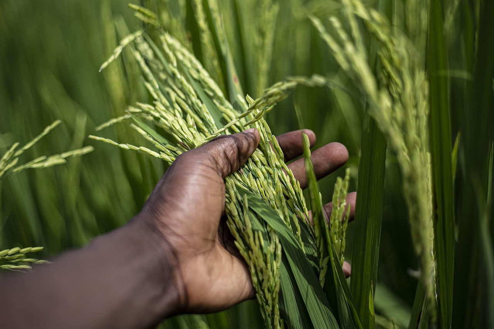
Scientific Name: Oryza sativa
Growing Conditions: Warm, humid climates with well-drained soil.
Season: Monsoon (Summer)
Common Diseases: Rice Blast, Sheath Blight
Care Tips: Needs plenty of water during the growing season and a sunny environment for best growth.
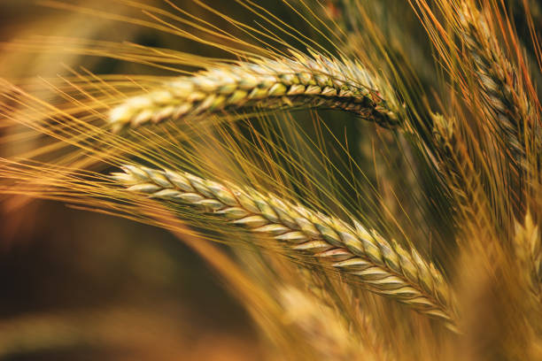
Scientific Name: Triticum aestivum
Growing Conditions: Cool weather and well-drained soil.
Season: Winter
Common Diseases: Wheat Rust, Fusarium Head Blight
Care Tips: Needs regular watering, especially during the growing season, and requires fertile soil.
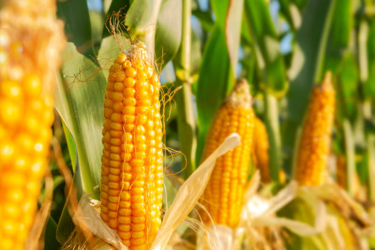
Scientific Name: Zea mays
Growing Conditions: Requires full sunlight and well-drained soil.
Season: Summer
Common Diseases: Corn Smut, Corn Earworm
Care Tips: Needs regular irrigation and protection from pests to ensure a healthy yield.
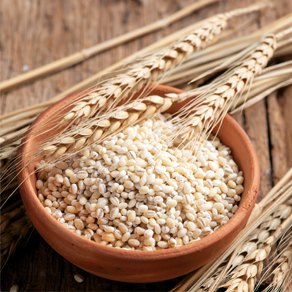
Scientific Name: Hordeum vulgare
Growing Conditions: Prefers cooler climates and well-drained soil.
Season: Spring
Common Diseases: Powdery Mildew, Barley Yellow Dwarf Virus
Care Tips: Barley requires moderate water and good soil drainage for healthy growth.
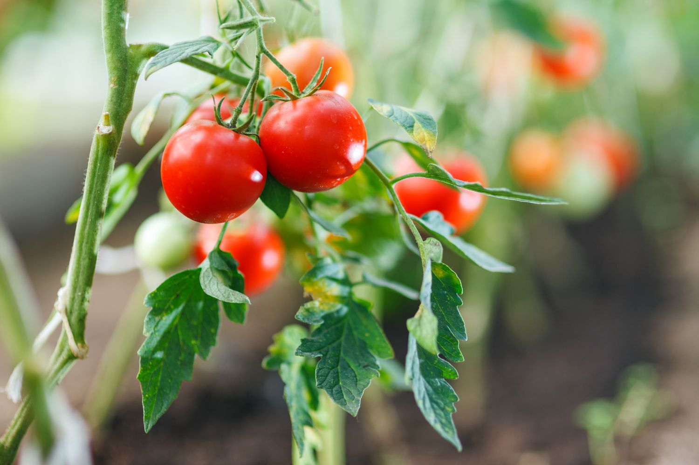
Scientific Name: Solanum lycopersicum
Growing Conditions: Warm, sunny conditions with well-drained soil.
Season: Summer
Common Diseases: Early Blight, Late Blight
Care Tips: Requires plenty of sunlight and should be watered consistently to avoid wilting.
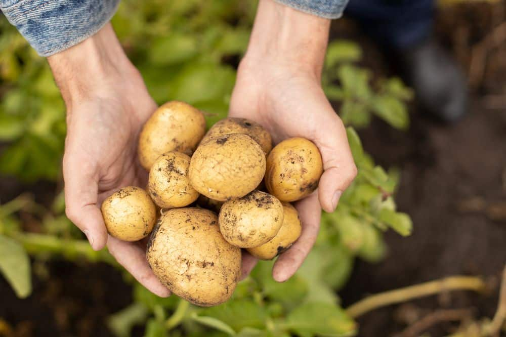
Scientific Name: Solanum tuberosum
Growing Conditions: Prefers cool weather and well-drained, loamy soil.
Season: Spring to Summer
Common Diseases: Potato Blight, Scab
Care Tips: Needs regular watering and good soil aeration for healthy tuber development.
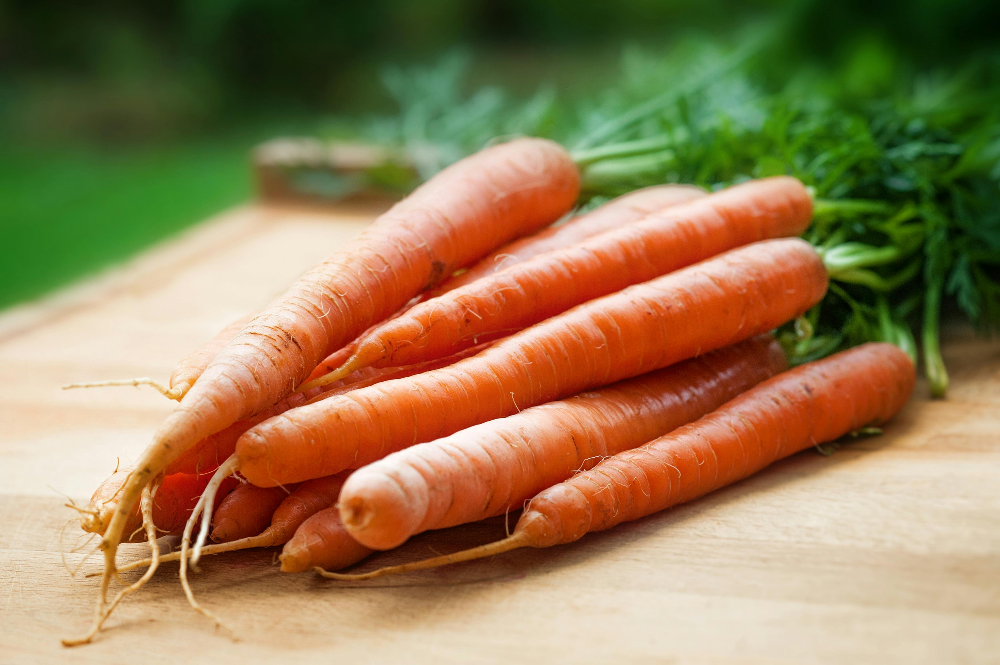
Scientific Name: Daucus carota
Growing Conditions: Grows best in loose, sandy, well-drained soil.
Season: Winter to Spring
Common Diseases: Carrot Rust Fly, Powdery Mildew
Care Tips: Needs regular watering, especially during dry spells, and prefers cooler temperatures.
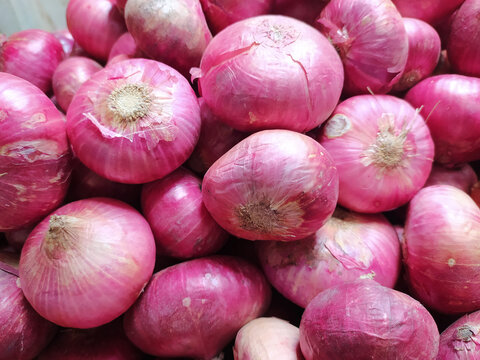
Scientific Name: Allium cepa
Growing Conditions: Requires well-drained, fertile soil and full sunlight.
Season: Winter to Spring
Common Diseases: Downy Mildew, Botrytis Rot
Care Tips: Onions prefer consistent watering and need enough space for their roots to develop.
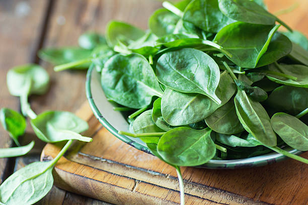
Scientific Name: Spinacia oleracea
Growing Conditions: Grows well in cooler weather with rich, loamy soil.
Season: Winter to Spring
Common Diseases: Downy Mildew, Powdery Mildew
Care Tips: Needs regular watering and protection from intense heat.
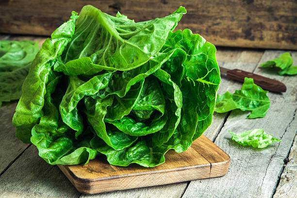
Scientific Name: Lactuca sativa
Growing Conditions: Prefers cool, moist climates and well-drained soil.
Season: Spring
Common Diseases: Downy Mildew, Lettuce Drop
Care Tips: Needs consistent moisture and cooler temperatures to thrive.
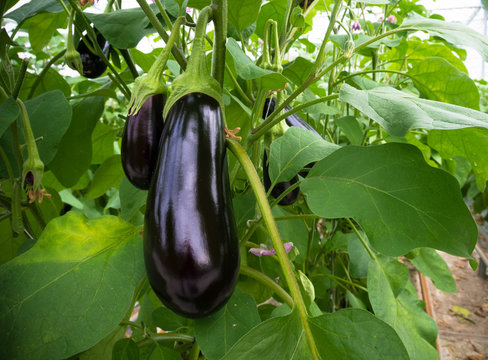
Scientific Name: Solanum melongena
Growing Conditions: Prefers hot temperatures and well-drained soil.
Season: Summer
Common Diseases: Verticillium Wilt, Flea Beetles
Care Tips: Needs full sunlight and consistent watering.
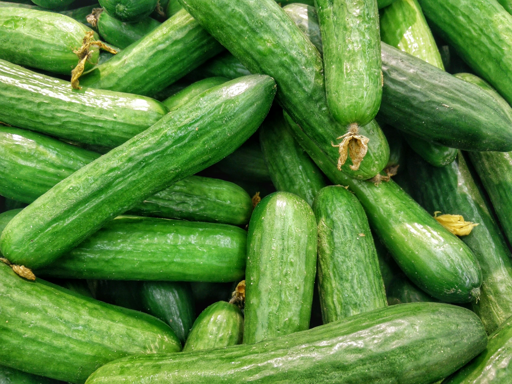
Scientific Name: Cucumis sativus
Growing Conditions: Requires warm temperatures and well-drained, slightly acidic soil.
Season: Summer
Common Diseases: Powdery Mildew, Downy Mildew
Care Tips: Needs consistent watering, especially during hot weather.